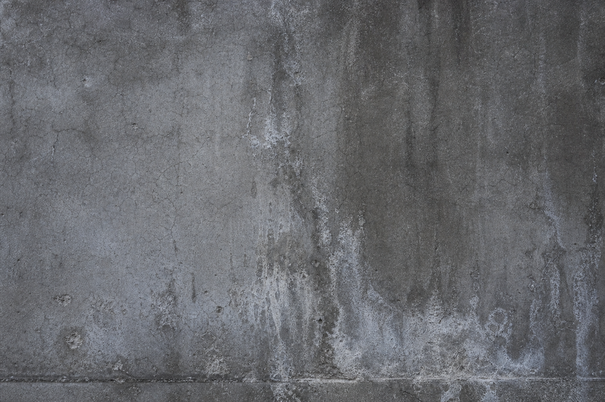
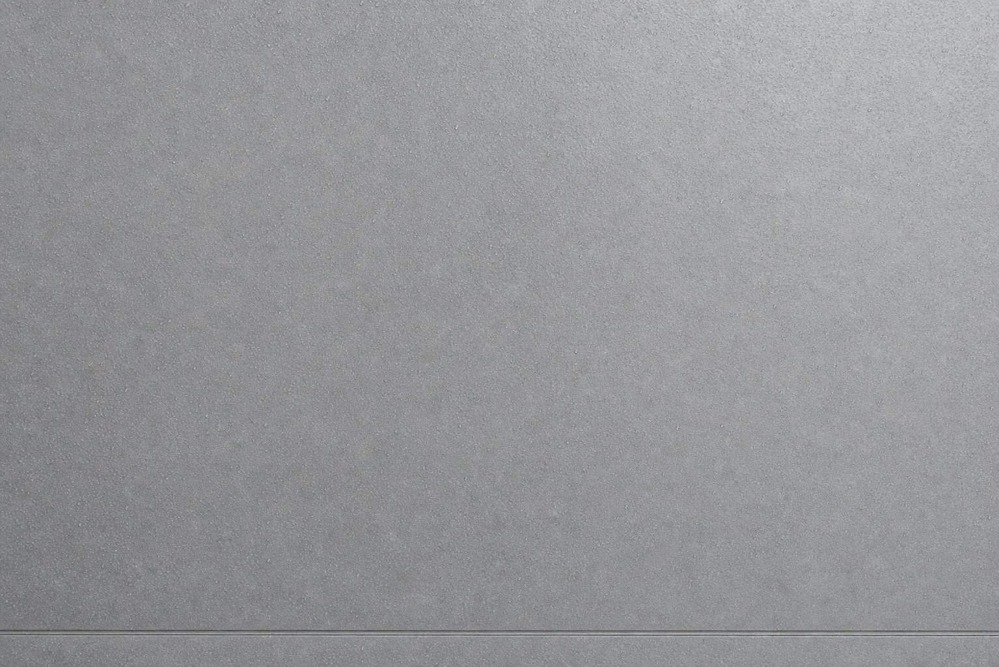

海外に持つ不動産は、あなたの資産の一部です。劣化は静かに、しかし確実に進みます。CRUXは、建築資産保護の専門家として、オーナーが本当に必要な判断軸を提供します。
Your properties abroad are more than real estate. They are assets that demand the same discipline as any other investment. Deterioration is silent — until it becomes expensive. CRUX gives you the clarity to act before that happens.
CRUXはオーナーの財務的判断を支える参謀として機能します。工事の提案ではなく、資産保護の戦略を提供します。
主力ソリューションであるXOPは、日本初の浸透型フッ素系外壁保護コーティング。実績を持つキーストーン社との連携のもと、海外展開を推進しています。
CRUXは販売のために動きません。オーナーにとって最善の判断を、専門知識と現場経験をもとに提示します。
CRUX functions as a strategic advisor to property owners. We don't pitch projects. We recommend what protects your asset — and what doesn't.
Our flagship solution, XOP, is Japan's first penetrating fluorine-based exterior protection coating — engineered by Keystone Co., Ltd. and brought to market through CRUX.
CRUX doesn't sell for the sake of selling. Our value is in judgment — backed by technical expertise and real-world application experience.


| 比較項目 | 一般的な塗料 | XOP（浸透型） |
|---|---|---|
| 保護の仕組み | 表面に膜を形成 | 素材内部に浸透・結合 |
| 素材への影響 | 透湿性・質感が変化する場合あり | 素材本来の状態を維持 |
| 耐久性 | 5〜10年（環境による） | 長期間（環境による） |
| 劣化時の症状 | 剥落・クラック・変色 | 徐々に効果が低減 |
| 維持管理 | 定期的な塗り直しが必要 | 維持管理コストが低い |
| 適用範囲 | 製品により限定的 | コンクリート・石材・タイル等 |
| Comparison | Conventional | XOP (Penetrating) |
|---|---|---|
| Protection Method | Forms surface film | Penetrates and bonds internally |
| Effect on Substrate | May alter texture/breathability | Preserves original material state |
| Durability | 5–10 years (environment-dependent) | Extended lifespan |
| Deterioration Pattern | Peeling, cracking, discoloration | Gradual reduction in efficacy |
| Maintenance | Regular reapplication required | Low ongoing maintenance cost |
| Substrate Compatibility | Varies by product | Concrete, stone, tile, masonry |
航海者が南十字星を見上げるように、資産オーナーが頼れる確かな判断軸がある。CRUXはその存在を目指しています。
For centuries, navigators fixed their course by Crux. Unwavering. Precise. Reliable. That is the standard we hold ourselves to for every asset owner we serve.
南十字星（Crux）は、南半球の夜空で最も小さく、しかし最も確実な星座です。嵐の夜も、霧の夜も、その場所は変わらない。だから航海者たちは、それを信じて進むことができた。
海外に不動産資産を持つオーナーにとって、現地の状況は常に不確かです。何が起きているかわからない、誰を信じればいいかわからない。そんな状況の中で、CRUXは動じない判断軸として機能します。
技術の話をする前に、まずオーナーの立場に立つ。販売のための言葉ではなく、資産を守るための言葉を選ぶ。CRUXが提供するのは、その誠実さです。
吉岡 正彦
代表社員 / クラックス合同会社
建築資産の保護という分野に長年携わってきた経験を起点に、海外に資産を持つ日本人オーナーが直面する課題——技術・言語・距離の壁——を解決することを使命とし、CRUXを設立しました。
「施工業者でも代理店でもなく、オーナーの参謀として動く会社にしたかった。」
| 社名 | クラックス合同会社 |
| 英語社名 | CRUX LLC |
| 代表社員 | 吉岡 正彦 |
| 所在地 | 〒124-0006 東京都葛飾区堀切8丁目24番12号 |
| 連絡先 | TEL: 03-6662-5105 / FAX: 03-6662-4314 |
| 事業内容 | 建築資産保護コーティングの施工・販売・海外独占販売 |
| 主力製品 | XOP（浸透型フッ素系外壁保護コーティング）/ キーストーン社製造 |
| 対応エリア | ハワイ・ドバイ・韓国・モロッコ 他 |
The Southern Cross — Crux — is the smallest constellation in the night sky. But for navigators of the southern hemisphere, it has been the most trusted fixed point for centuries. On stormy nights. On foggy nights. It doesn't move. So they could.
For Japanese asset owners with properties abroad, uncertainty is the default condition. What's happening to the building? Who do you trust for an honest assessment? When is the right time to act?
CRUX exists to answer those questions without agenda. Before we talk technology, we listen. Before we recommend, we assess. The language we speak is not sales — it is stewardship.
Masahiko Yoshioka
Representative Member / CRUX LLC
Drawing on years of experience in the field of building asset protection, Masahiko Yoshioka founded CRUX with a clear mission: to solve the challenges Japanese owners face with overseas properties — the barriers of technology, language, and distance.
"I didn't want to build another contractor or distributor. I wanted to build the company I would have wanted as a property owner myself."
| Company Name (JP) | クラックス合同会社 |
| Company Name (EN) | CRUX LLC |
| Representative | Masahiko Yoshioka |
| Headquarters | 8-24-12 Horikiri, Katsushika-ku, Tokyo 124-0006, Japan |
| Contact | TEL: +81-3-6662-5105 / FAX: +81-3-6662-4314 |
| Business | Application, sales, and exclusive international distribution of architectural protection coatings |
| Primary Solution | XOP — Penetrating Fluorine Coating (by Keystone Co., Ltd.) |
| Service Areas | Hawaii, Dubai, South Korea, Morocco, and beyond |
CRUXへの相談は、全て無料です。初回は30分程度のビデオ通話またはメールから。物件の詳細がなくても構いません。「気になっている」だけで十分です。
CRUXは、急かしません。あなたのペースで課題を話してください。
対応言語: 日本語・英語
All initial consultations with CRUX are complimentary. A 30-minute video call or an email exchange — whichever you prefer. You don't need all the details ready. A question is enough to start.
CRUX doesn't rush the conversation. Take your time.
Languages: Japanese and English